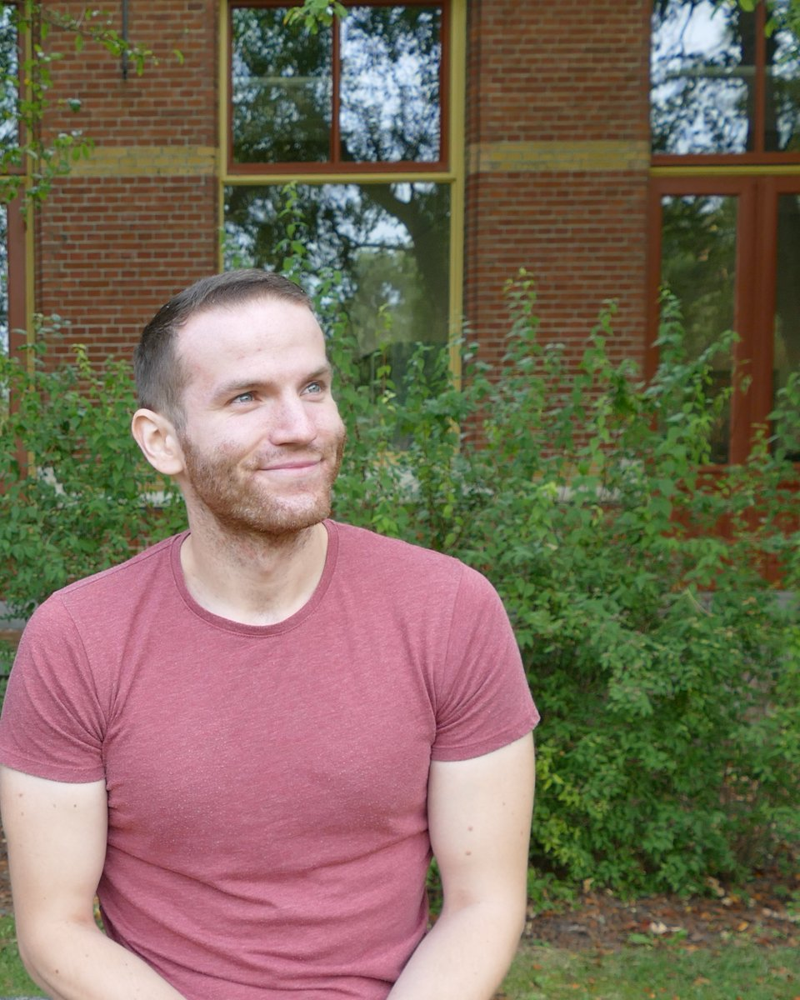

My name is Tomáš Diviák and I currently hold a position of Senior Lecturer at the department of criminology and the Mitchell Centre for Social Network Analysis at the University of Manchester. Besides that, I am a co-founder of Czech Network for Social Network Analysis, through which we regularly organize workshops and conferences. Within the International Network for Social Network Analysis, I am currently a board member of the Early- and Mid-Career Researchers council (co-chair 2024-25).
My research focuses mainly on social network analysis (SNA), most prominently statistical models for network data, and on analytical sociology and criminology. I am interested in the application of SNA, mainly to criminal networks, but also to political, organizational, health-related, or historical networks. I find the study of structure and dynamics of human networks to be intriguing and crucial for our understanding of social reality.
Besides network analysis and sociology (and science in general), I enjoy reading science fiction & fantasy books, lifting heavy weights, listening to heavy music, taking long walks, and playing various card games.